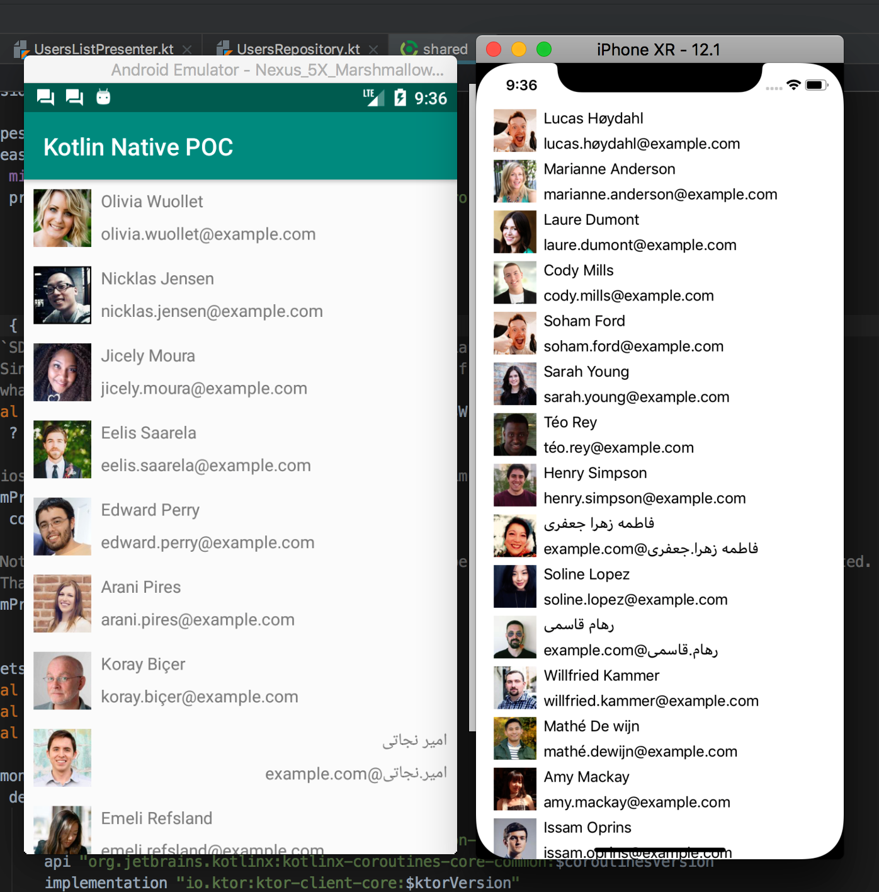
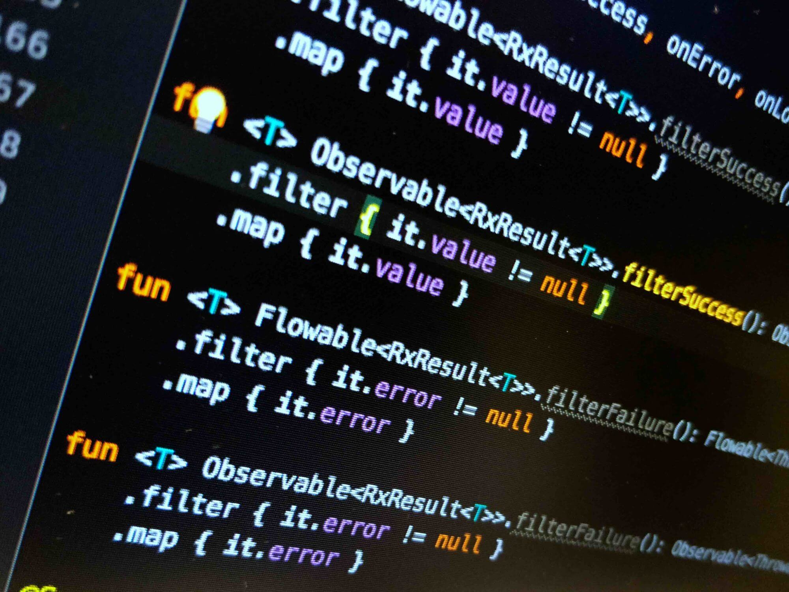
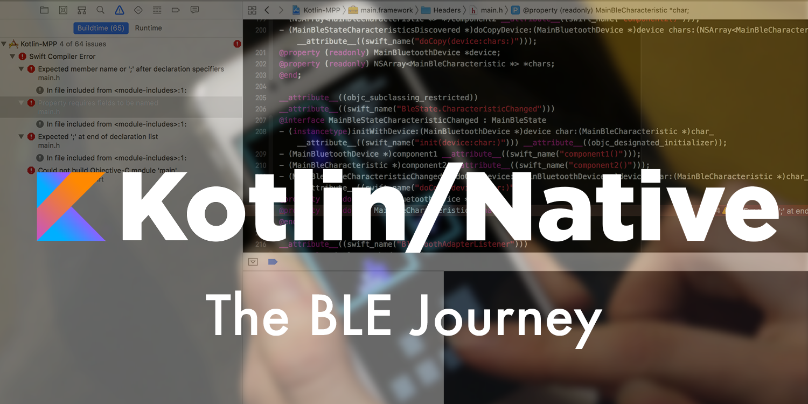

Android Engineer by day, guitar player by night. I write about Kotlin Multiplatform, mobile architecture, and the small details of building apps that ship.
-

2019-04-05A trip into Kotlin Multiplatform Projects, Part 3
Wiring the shared module into Android and iOS, and what the build does under the hood.
-

2019-03-22Kotlin inline classes, such magic
Zero-cost wrappers that vanish at compile time — when they help and when they bite.
-

2019-02-22A trip into Kotlin Multiplatform Projects, Part 2
Sharing business logic across platforms without giving up native UI.
-
 2019-02-04
2019-02-04A trip into Kotlin Multiplatform Projects, Part 1
Why share code at all, and how the
expect/actualmechanism fits together.